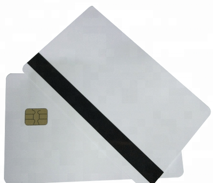

El carding es una forma de estafa online, la cual consta de realizar compras sin el consentimiento del propietario de la tarjeta.
El modo en que los carder consiguen la información es mediante grupos de compra de Facebook, WhastApp y Telegram. A la información bancaria la vamos a llamar CoCos, ¿Porque llamarla asi?. La respuesta es simple, ya que en Facebook es existen algunos filtros de palabras lo cuales al detectar palabras indebidas sancionan los usuarios, entonces para evitar esta sanción se utiliza la palabra CoCo haciendo referencia a "Credit Card". Mas adelante se les explicara el significado del vino o bin.
Existen dos tipos de carding los cuales son: el carding virtual y carding físico. La principal diferencia entre estos dos tipos de carding es que el virtual se basa en realizar comprar en línea con los CoCos de las personas. Y el carding físico consta de la clonación de las tarjetas, las cuales pueden ser clonados con skimmers, y estos skimmers se colocan en los cajeros automáticos y de esa forma clonan tu tarjeta. Y no solo existen los skimmers, tambien podemos encontrar clonadores de la marca msr-tron, el modelo más utilizado es el MSR206.
El proceso de clonación es bastante simple solo basta con pasar la tarjeta de crédito o débito por el lector del MSR206 y posteriormente se debe de conectar a alguna computadora que tenga el software de MSR previamente instalado, conectar el clonador a la pc y este a su vez mostrara la información obtenida mediante tracks los cuales van desde el 1 al 3.
Para poder culminar la clonación de una tarjeta se necesita de tarjeta "virgen" o también llamada como paloma o crema, aun que su nombre real es SLE442 y existen diversas versiones. Para poder escribir los tracks en la SLE se necesita ayuda del software de MSR y de un clonador que tenga la capacidad de poder escribir es por eso que muchos usan el modelo MSR206 ya que trae la capacidad de poder escribir la información en tarjetas SLE.
Hasta este punto tal vez ya se hicieron esta pregunta. Los CoCos se consiguen de diversas maneras entre ellas esta: pishing, vishing, scam, mediante los Call Center, y por los ejecutivos del banco.
La respuesta es sí, ellos venden tu información de distintas formas las cuales son las siguientes.
Los ejecutivos son los que tienen acceso a esas bases de datos, una base muy conocida es la "SuperBase" la cual pertenece al banco Santander.
Lo más importante es mantener la calma y no entrar en pánico, y siempre tener la banca activada con notificaciones para poder ver todos los movimientos de su tarjeta y actuar de una manera más rápida. Una vez el cargo no reconocido este acredito lo que puedo hacer es desde la banca levantar una aclaración y seguir el procedimiento que les pida, ya que puede variar por cada banca. Otra alternativa es marcar directamente al banco y levantar la aclaración, aun que puede ser mas tardado en que lo atiendan. Si la aclaración sale a favor de usted, su dinero lo tendrá de vuelta, el tiempo de devolución del dinero puede variar, siendo asi las tarjetas de crédito con un plazo mayor de espera que va desde 7 días a 15 días, y las de débito tienen un plazo mucho menor que va desde los 3 días hasta los 7 días. Existen casos en los que la aclaración no sale a favor y es cuando en verdad están en problemas por que en algunos cuando la aclaración es improcedente te hacen cobro y te hacen pagar los cargos que se hallan hecho a tu tarjeta. Puedes levantar una segunda aclaración pero la cual tomara mas tiempo y se deberá realizar una investigación mas a fondo.